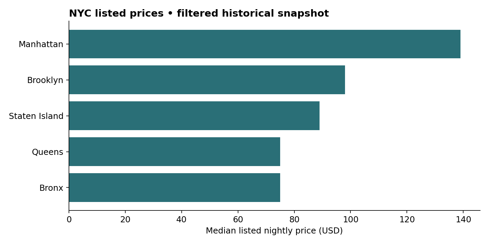

NYC Airbnb Listing Analysis
Compares listed prices and room types across boroughs, with data validation and explicit limits on interpreting calendar availability.

Business question
How do listed prices, room types and calendar availability differ across NYC boroughs?
Approach
Load the 38,185-row public snapshot linked by the original notebook, remove duplicate listing IDs, validate prices and availability, and compare median prices and inventory by borough and room type. The public notebook reproduces these comparisons from borough-level and citywide room-type aggregates; individual source records are not distributed.
Business use
Hosts can investigate asking-price benchmarks for similar room types; guests can compare listed prices and location; platform analysts can investigate inventory patterns. These are descriptive comparisons rather than evidence that an area is underpriced or oversaturated.
Important distinction
Calendar unavailability is not observed occupancy. Hosts can block dates, so 365 minus available days does not establish bookings, demand or revenue. This single cross-sectional file also cannot establish seasonality or price elasticity.
Source: the public listing CSV linked in the original notebook; original collection date not documented. Methodology: Inside Airbnb data assumptions. These are historical snapshot figures.